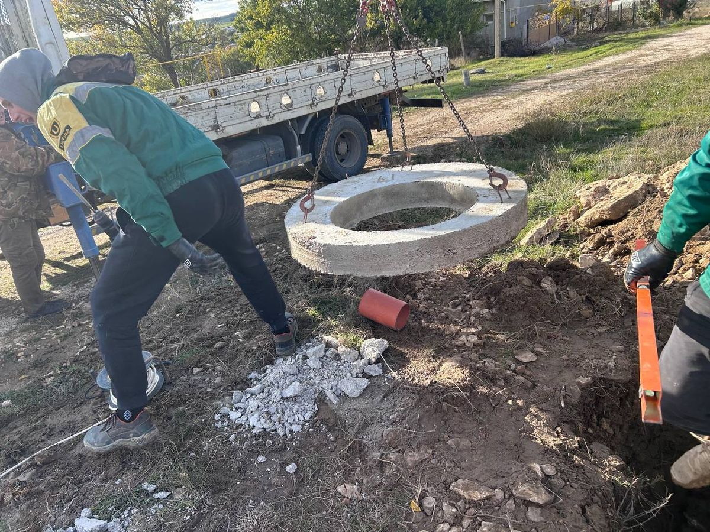
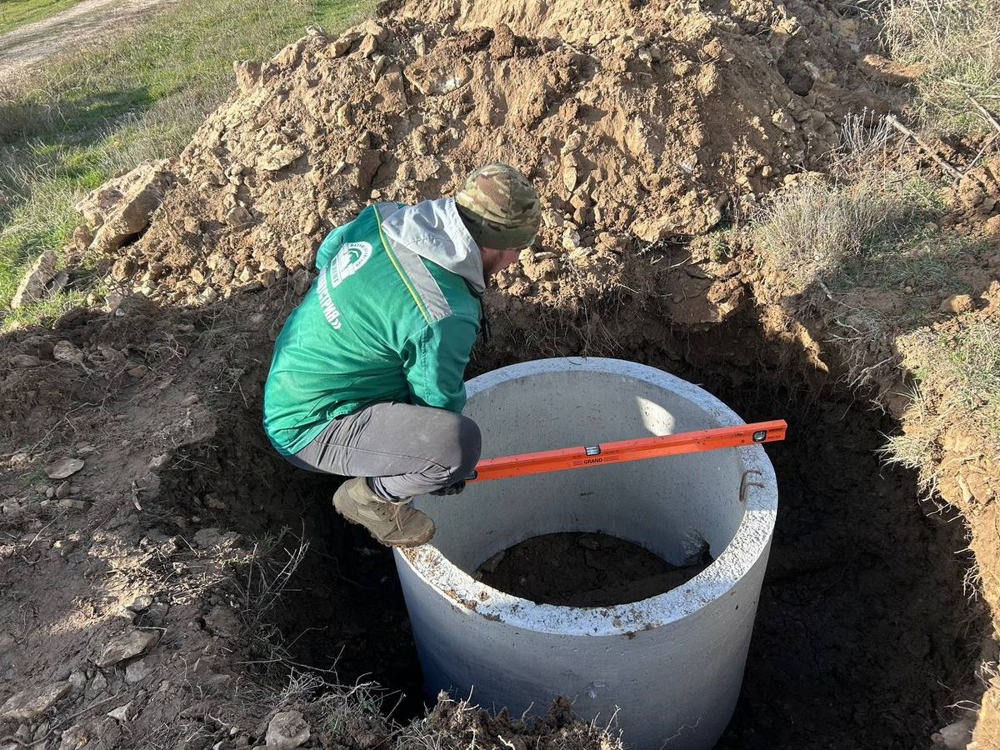
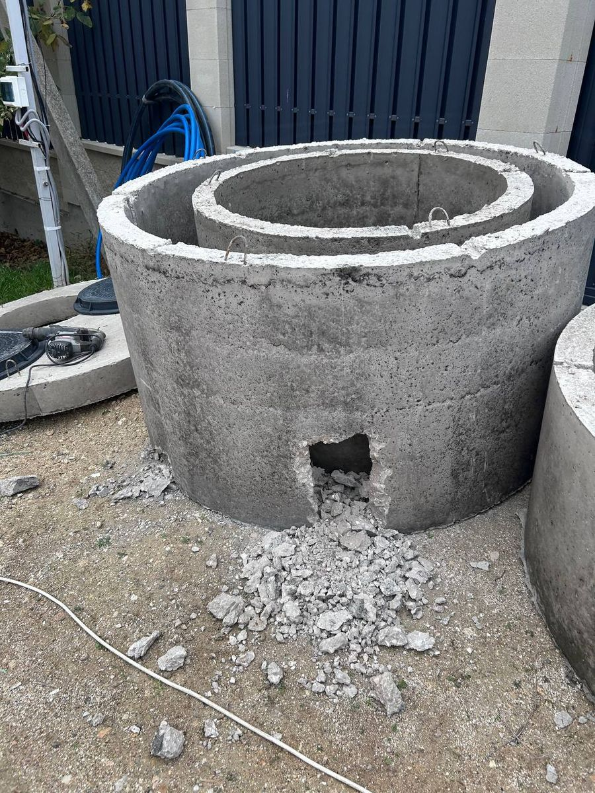
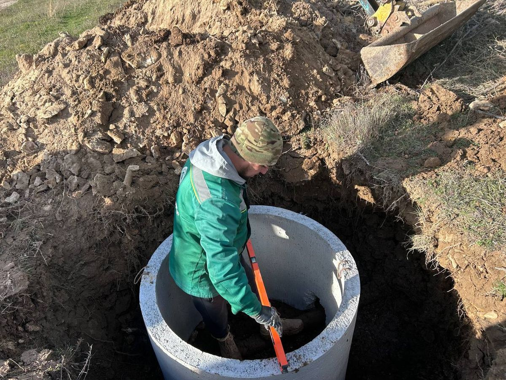
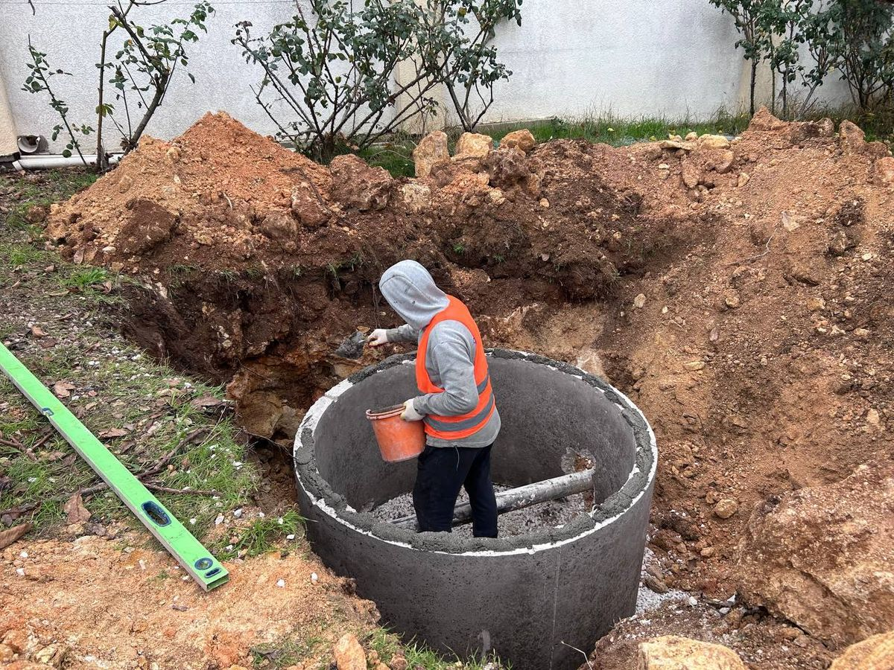
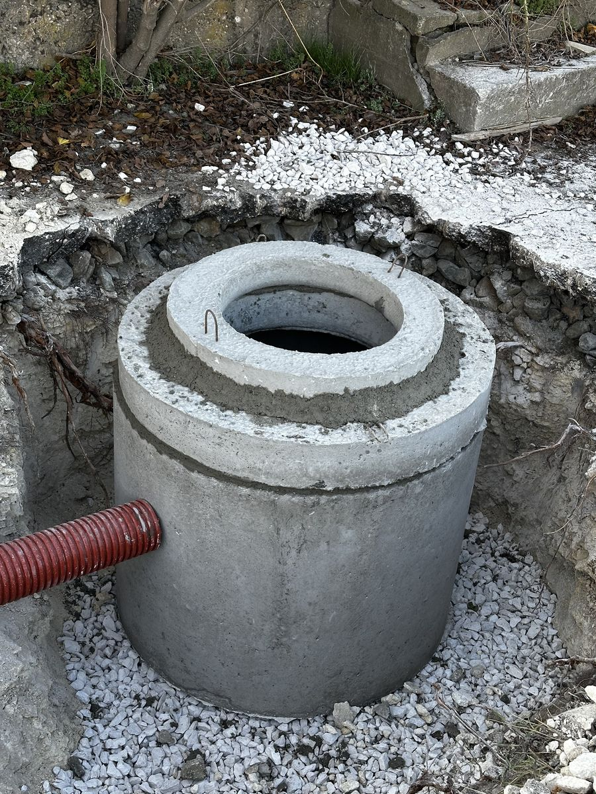
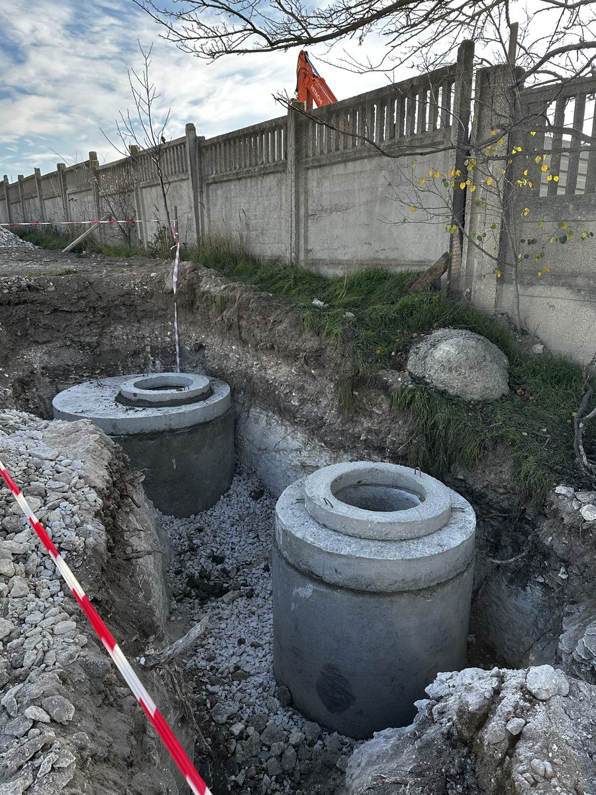
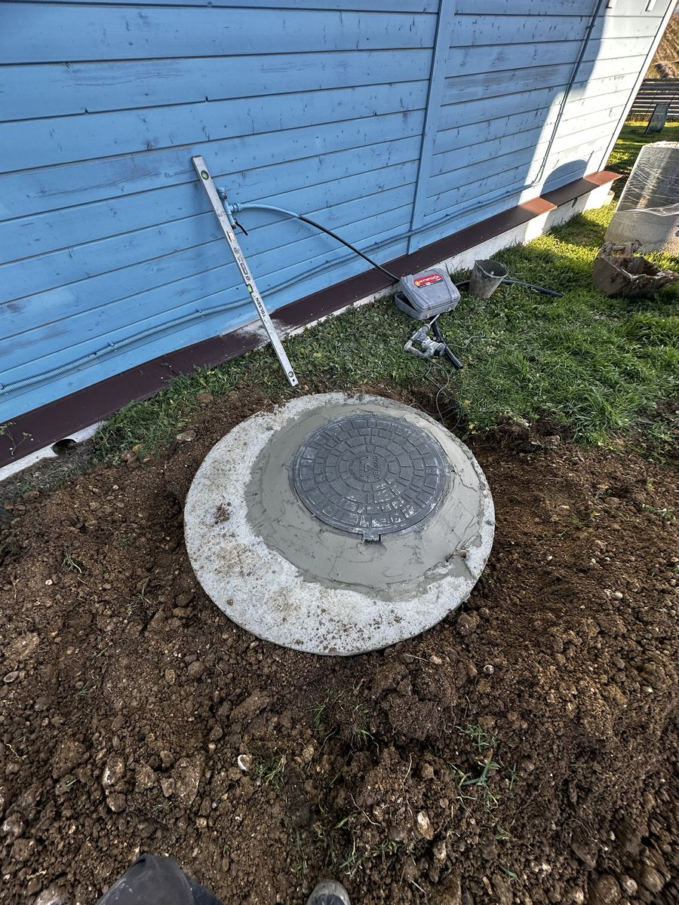
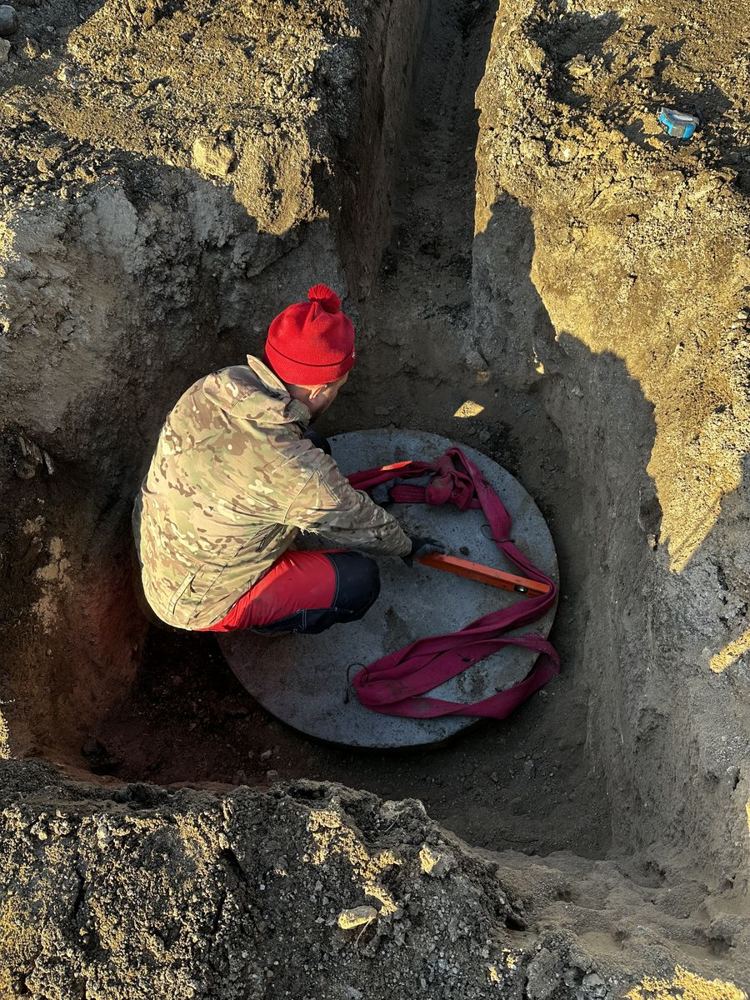

Установка септиков из ЖБ колец и пластиковых ёмкостей. Монтаж за 1 день, гарантия 1 год. Работаем по всему Крыму.
Онлайн-калькулятор с учётом геологии вашего района
Точная смета после бесплатного выезда инженера
Реальные фото объектов в Крыму









История объектов с деталями монтажа и решениями под геологию
Монтаж септика на участке с уклоном 25 градусов. Выполнили скальную разработку вручную с отбойными молотками, залили бетонное основание под плиту-якорь.
Грунтовая вода на глубине 40 см. Применили технологию непрерывной откачки воды мотопомпой и смонтировали септик за 8 часов. Якорение к ЖБ плите полимерными ремнями.
Фиолентовская скала — мини-экскаватор с гидромолотом, котлован глубиной 2,2 метра. Обсыпка корпуса цементно-песчаной смесью. Септик на 8 человек.
Глинистый грунт, выгребная яма переполнялась за 3 дня. Установили септик из 3 ЖБ колец и поле фильтрации из перфорированных труб длиной 10 м.
6 этапов от звонка до запуска системы — строго по регламенту
Бесплатный замер на вашем участке по всему Крыму. Исследуем тип грунта, уровень грунтовых вод, размечаем трассу и подписываем договор с зафиксированной стоимостью.
Бережно копаем котлован вручную или мини-техникой с учётом ландшафта. Организуем песчаную подушку 10–15 см на дне котлована, горизонтируем основание.
Аккуратно опускаем септик, выравниваем по уровню. При высоком УГВ закрепляем станцию к ЖБ плите бандажными ремнями, защищая от выталкивания грунтовыми водами.
Прокладываем утеплённые подводящие трубы 110 мм с правильным уклоном 2 см на метр. Монтируем компрессор, насос выброса и закладываем бронированный кабель.
Одновременно заполняем септик чистой водой и обсыпаем котлован цементно-песчаной смесью послойно с трамбовкой, гарантируя отсутствие деформации корпуса.
Запуск компрессора, проверка работы эрлифтов и распределителей воздуха. Проводим инструктаж по эксплуатации и сдаём полностью готовую канализацию!
Отзывы собираются — публикуем после проверки
"Установили септик из 3 ЖБ колец в Севастополе за 1 день. Бригада приехала утром с техникой, к вечеру всё было готово — даже участок подровняли и мусор вывезли. Цена не изменилась по сравнению со сметой."
"Живём в Алуште, участок на склоне. Думали никто не возьмётся — скала, уклон. Андрей приехал, посмотрел, привезли мини-экскаватор с гидромолотом. За 2 дня установили пластиковый септик с якорением к плите. Всё работает уже полгода!"
"В Саках высокий уровень грунтовых вод, боялись что септик всплывёт. Ребята сделали всё по технологии — якорение к ЖБ плите, цементно-песчаная обсыпка. Прошёл год, включая зиму — ни единой проблемы. Рекомендую!"
"Заказывали дренажный колодец + септик из 2 колец под дачу в Феодосии. Приехали через день после звонка, сделали за день. Оплата по факту — сначала проверили работу, потом заплатили. Честный подход!"
Ответы дежурного инженера КэпСтрой на технические вопросы
Оставьте заявку — перезвоним за 15 минут с точной сметой